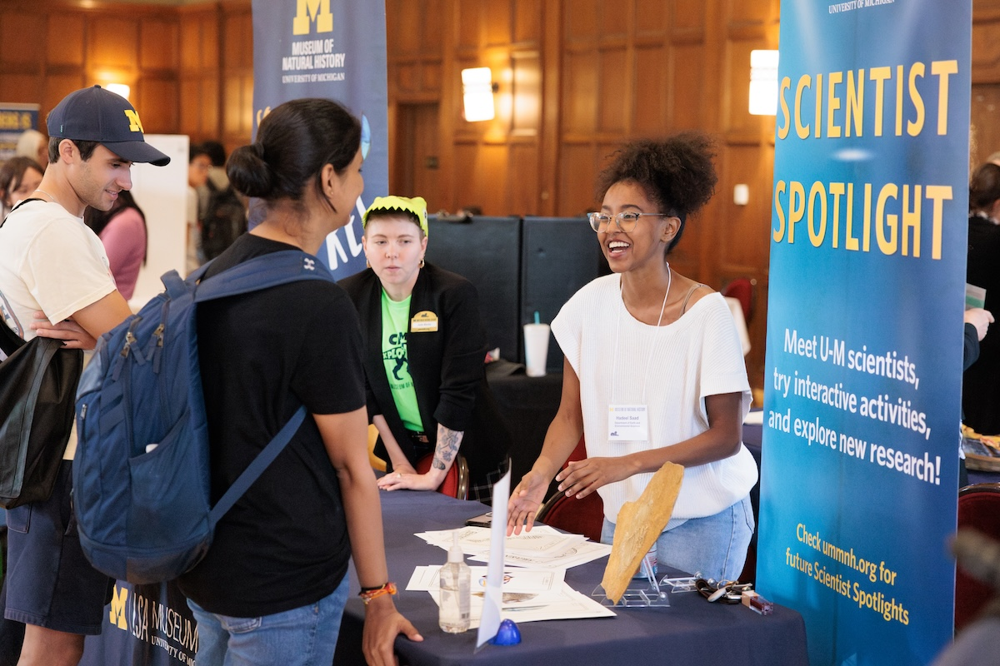
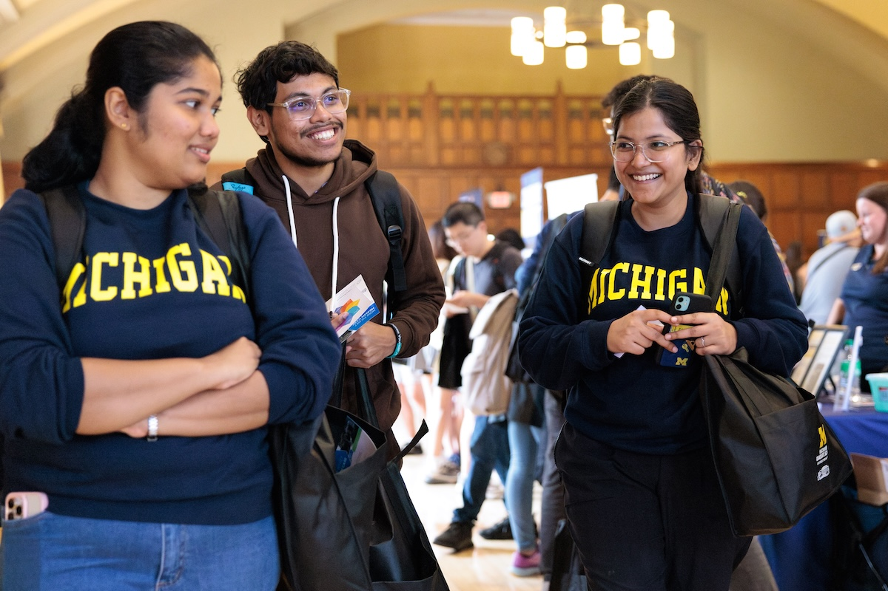

Completing, Reflecting, and Translating Your Impact
Close your project responsibly, evaluate your outcomes, and articulate your real-world experience for your
future career.

The Power of Closing Well and Reflecting Deeply
A project is not complete simply because the final deliverable has been
handed over. The final stages—closing, reflecting, and translating—are
what transform a transient project into lasting organizational value and personal career
momentum.
Responsible handoffs ensure that partners are not left with abandoned
tools or undocumented systems they cannot maintain. Simultaneously,
structured reflection forces you to pause and ask:
What did I learn about my technical skills, my teamwork style, and
the ethical impact of my work?
Without reflection, experience is just something that happened to you;
with reflection, experience becomes expertise. Learning to translate
complex, messy project narratives into clear resume bullets and
portfolio case studies is what turns your UMSI education into your
greatest professional asset.
Value & Narrative
Responsible offboarding is an ethical mandate in engaged learning. Delivering high-quality technical assets
is only half the job—ensuring the community partner or client can independently maintain, update, and benefit
from your work long after the semester ends is what defines a successful project.
Focus & Objectives
- Completing & Transitioning Work: Package code, design files, reports, and technical
assets into accessible, usable formats for your partner.
- Closing Relationships Appropriately: Formally conclude the project with gratitude,
clarity, and clear future boundaries.
- Evaluating Impact: Measure project outcomes against initial scoping goals and gather
client feedback.
Featured Resources & Handouts

After the Experience: Career Integration & Portfolios
Employers value students who can solve unscripted problems, collaborate
with diverse teams, and deliver results under realistic constraints.
After completing your project, take time to connect your engaged learning
experience to your professional goals.
Turn Your Experience into a Next Step
-
Articulating Skills: Translate complex project work
into clear resume bullets and interview responses.
-
Portfolio Integration: Document your process,
artifacts, key decisions, and measurable outcomes.
-
Maintaining Networks: Stay connected with mentors,
community partners, and teammates.
Career Resources